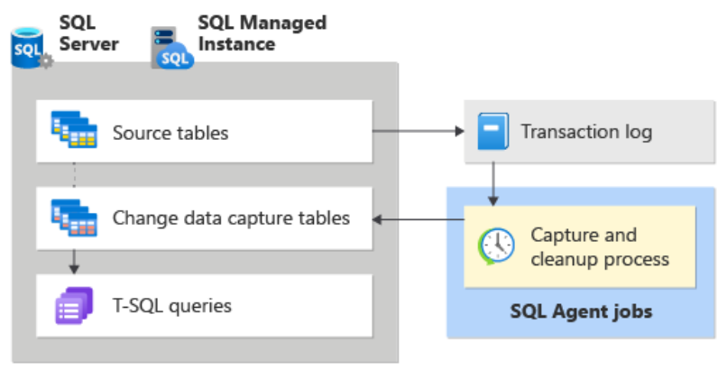

Overview

A feature in SQL Server that tracks and records changes (inserts, updates, and deletes) made to the data in a table using SQL Server Agent. It captures these changes in change tables, allowing you to query them and use the data for various purposes such as auditing, replication, and data warehousing. CDC helps in efficiently capturing data changes without the need for complex and resource-intensive custom solutions.
| _$operation | |
| 1 | Delete |
| 2 | Insert |
| 3 | Update Before |
| 4 | Update After |
Limit is two capture instances per table.
Data Flow
The source of change data for CDC is the SQL Server transaction log. As inserts, updates, and deletes are applied to tracked source tables, entries that describe those changes are added to the log.
The log serves as input to the capture process. Then, it reads the log and adds information about changes to the tracked table's associated change table. Functions are provided to enumerate the changes that appear in the change tables over a specified range, returning the information in the form of a filtered result set. The filtered result set is typically used by an application process to update a representation of the source in some external environment.
Capture Instance
Before changes to any individual tables within a database can be tracked, CDC must be explicitly enabled for the database. All objects that are associated with a capture instance are created in the CDC schema of the enabled database.
Change Table
The first five columns of a CDC change table are metadata columns. Each insert or delete operation that is applied to a source table appears as a single row within the change table. Each row in a change table also contains other metadata to allow interpretation of the change activity.
Validity interval
The CDC validity interval for a database is the time during which change data is available for capture instances.
- Database – Data that is deposited in change tables grow unmanageably if you don't periodically and systematically prune the data. The CDC cleanup process is responsible for enforcing the retention-based cleanup policy.
- Capture instance – Although it's common for the database validity interval and the validity interval of individual capture instance to coincide, however, isn't always true. The validity interval of the capture instance starts when the capture process recognizes the capture instance and starts to log associated changes to its change table.
Handling changes to source table
Accommodating column changes in the source tables that are being tracked is a difficult issue for downstream consumers. The capture process responsible for populating the change table accommodates a fixed column structure change table by ignoring any new columns not identified for capture when the source table was enabled for CDC. Typically, the current capture instance continues to retain its shape when DDL changes are applied to its associated source table.
Relationship with log reader agent
The logic for CDC process is embedded in the stored procedure sp_replcmds, an internal server function built as part of sqlservr.exe and used by transactional replication to harvest changes from the transaction log.
The principal task of the capture process is to scan the log and write column data and transaction-related information to the CDC change tables. When a database is enabled for CDC, even if the recovery mode is set to simple recovery the log truncation point will not advance until all the changes that are marked for capture have been gathered by the capture process. If the capture process is not running and there are changes to be gathered, executing CHECKPOINT will not truncate the log. The capture process is also used to maintain history on the DDL changes to tracked tables.
Agent jobs
- Two SQL Server Agent jobs are typically associated with a CDC enabled database: one that is used to populate the database change tables, and one that is responsible for change table cleanup.
- The CDC agent jobs are removed when CDC is disabled for a database.
- Starting and stopping the capture job does not result in a loss of change data. It only prevents the capture process from actively scanning the log for change entries to deposit in the change tables. A reasonable strategy to prevent log scanning from adding load during periods of peak demand is to stop the capture job and restart it when demand is reduced.
- CDC can't function properly when the Database Engine service or the SQL Server Agent service is running under the NETWORK SERVICE account. This can result in error 22832.
Interoperability
https://learn.microsoft.com/en-us/sql/relational-databases/track-changes/change-data-capture-and-other-sql-server-features?view=sql-server-ver16
Implementation
- Change owner to 'sa'.
- Enable CDC on a database level.
- Enable CDC on a table. This may take awhile since it's also creating jobs.
- To disable CDC to a table / delete the CDC table:
EXEC sp_changedbowner 'sa'
EXEC sys.sp_cdc_enable_db
EXEC sys.sp_cdc_enable_table @source_schema = N' Person', @source_name = N'Address', @role_name = NULL, -- @capture_instance= N'Address', @capture_instance = NULL, -- NULL means it will copy the <schema>.<table name> with suffix _ct. @supports_net_changes = 1, -- Value 1 is for frequent changes - it will only save the most recent one. @captured_column_list = N'AddressID, AddressLine1, City' @filegroup_name = N' PRIMARY';
EXEC sys.sp_cdc_disable_table @source_schema = N'Person', @source_name = N'Address', @capture_instance= N'Address'
References
- https://learn.microsoft.com/en-us/sql/relational-databases/track-changes/about-change-data-capture-sql-server?view=sql-server-ver16
- https://www.youtube.com/watch?v=IJbAhfFRHdA